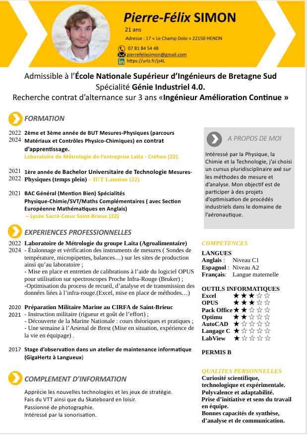

Mon Parcours
| Années | Formation | Établissement |
|---|---|---|
| 2022 - 2024 | BUT Mesures Physiques (en apprentissage, parcours Matériaux et Contrôles Physico-Chimiques) | IUT Lannion / Laïta (Créhen) |
| 2021 - 2022 | 1ère année de BUT Mesures Physiques (formation initiale) | IUT Lannion |
| 2021 | Baccalauréat Général Mention Bien (Spécialités Physique-Chimie, SVT, Maths complémentaires - Section euro maths en anglais) | Lycée Sacré-Coeur - Saint-Brieuc |
| 2020 - 2021 | Préparation Militaire Marine | CIRFA Saint-Brieuc + Arsenal de Brest |
| 2017 | Stage d'observation en maintenance informatique | GigaHertz - Langueux |
"Chaque étape de mon parcours depuis ma tendre enfance a précisé mon objectif d'être un ingénieur agile et responsable"

Télécharger mon CV (PDF)
Mis à jour : mai 2024